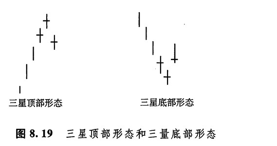
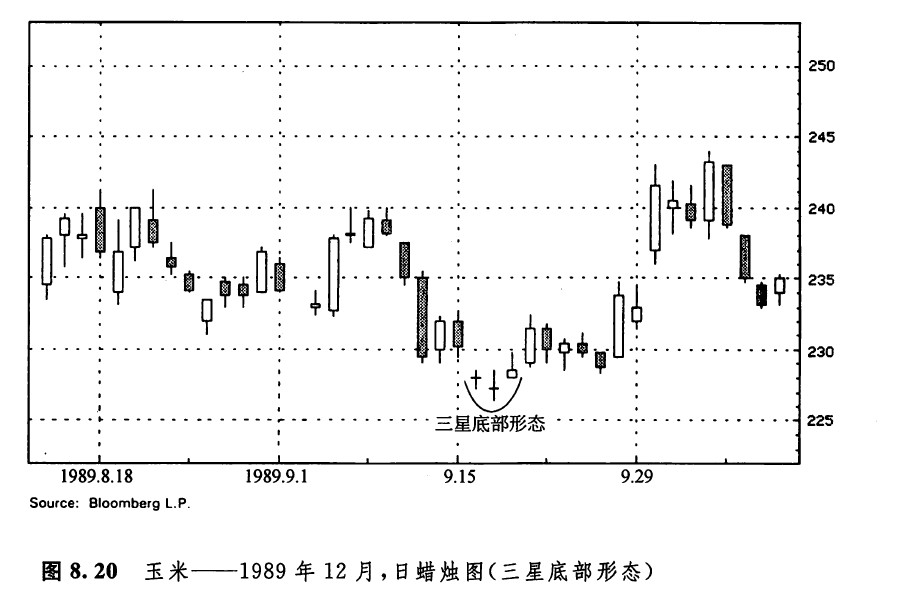
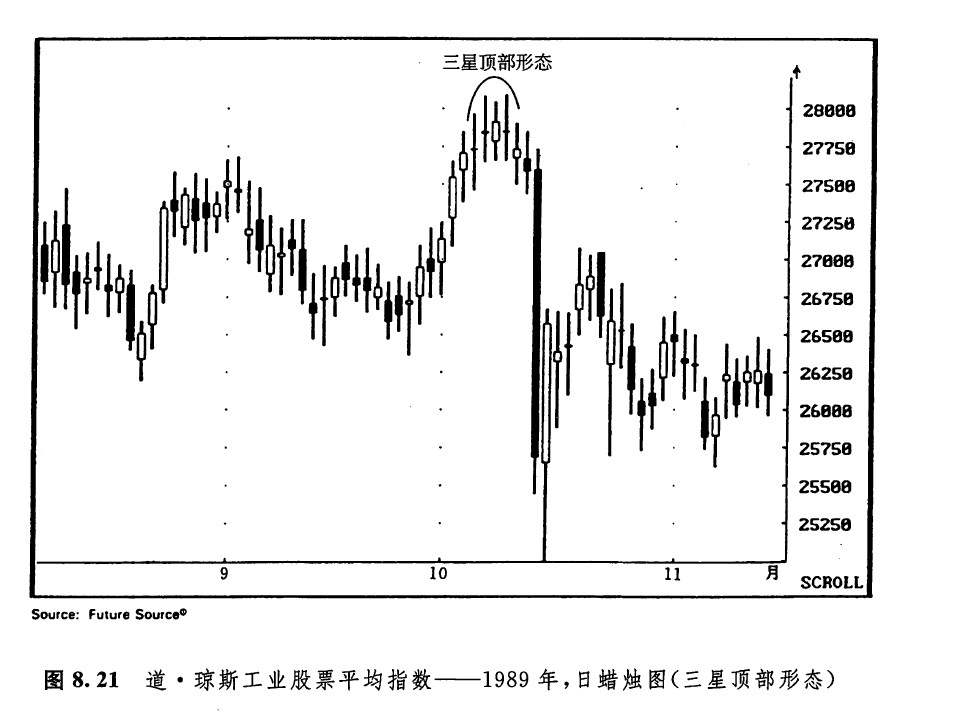

三星形态（如图8.19所示）非常罕见，但是是一种意义极其重大的反转形态。三星形态是由三根十宇线组成的，中间的十字线是一根十字星蜡烛线。理想的三星形态如图8.19所示，不过迄今为止，我还未曾碰到过理想的三星形态的实例。然而，下面的几个图例说明，即使本形态是以变体的形式出现的，它的技术意义也是不容忽视的。为什么我们将这个形态放在此处讨论，而不是放在关于星蜡烛线的一章讨论呢？这是因为该形态最根本的特征是：它是由三根十字线（或者近似十字线）组成的。

如图8.20所示，在9月15日所在的一周的前几天，出现了两根十字线，在它们的后面还跟着一根小实体的蜡烛线。这三根蜡烛线构成了三星形态的一种变体，它构成了一轮幅度达到0.15美元的上涨行情的开端。如图8.21所示，在1989年9月下旬，道·琼斯工业股票平均指数开始了一段上冲行情。10月初，出现了由三根十字线组成的一个蜡烛线系列，于是该上涨行情达到了顶点。虽然这也不是一个理想的三星形态，但是在市场累积了170点的上涨幅度之后形成的这三根十字线，依然是一个可怕的征兆。请注意，其中后两根十字线还组成了一个平头顶部形态。


下一篇：第九章 蜡烛图技术汇总
上一篇：构成支撑水平和阻挡水平的十字线
copyright @ 2018 制作：汉钛电线，Hingtak Wire & Cable LLC